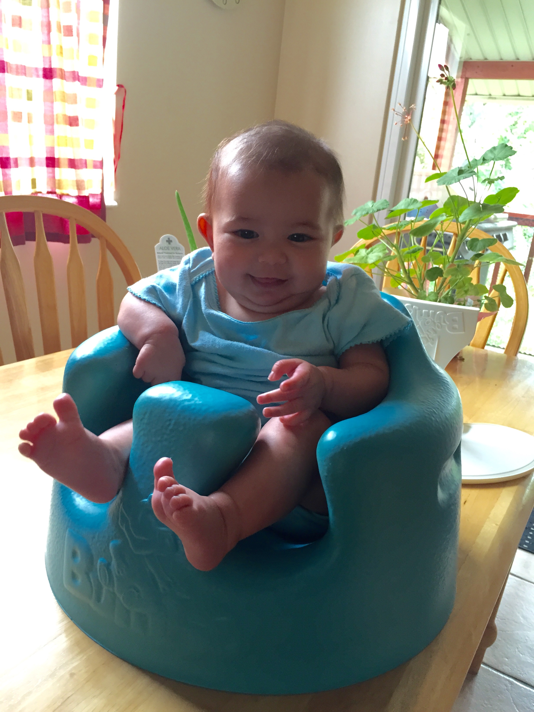
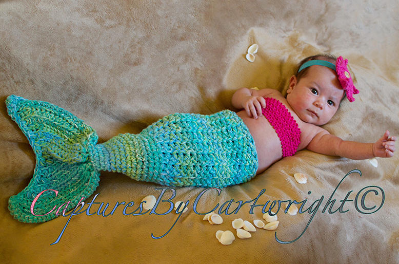
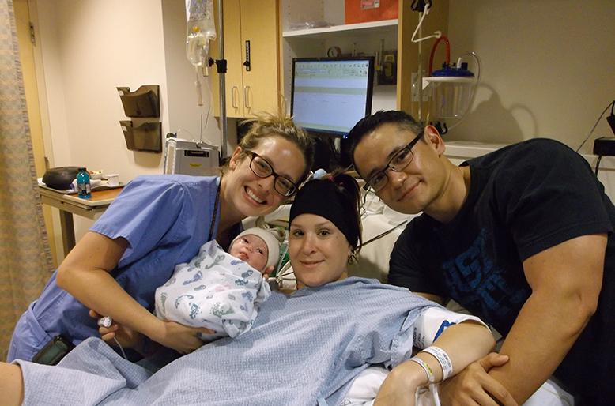

Mommy decided she was going to get this baltic amber teething necklace for Azsurai.

According to amber salesman like these and these, baltic amber is supposed to help with a huge number of claimed benefits:
- • Provides natural pain relief for babies, toddlers, and children
- • Helps to ease teething pains in children as well as colic and gas and other ailments
- • Inflammation of the throat, ear and stomach
- • Fights irritation, infections, and respiratory disease
- • Dramatically improves the body’s immunity
- • Breaks the cycle of chronic inflammation
- • A completely non-invasive remedy for side effects associated with teething (lack of appetite, upset tummies, ear ache, fevers and colds)
- • Antispasmodic and anti-fever
- • Improvement of arthritis
- • Improves blood circulation
- • Eases muscle pains
- • Transmutes negative into positive energy
- • Promotes positive thinking and attitude
- • Revitalizes mind, body and soul
- • Helps to relieve depression
- • Supports physical healing and detoxification
- • Alleviates disorders of the adrenals, liver and spleen
Umm.. Wow? Forget teething. If all this is true I'll just sprinkle 6 or 7 on each of my meals. Surely the amber will give me improved strength and endurance before adding 30 years to my lifespan.
What do you think, Azzy?
 "You mean I get some of those things you and mommy have in your mouth right here?"
"You mean I get some of those things you and mommy have in your mouth right here?"
Maybe you're not the best person to ask. You're just a naturally happy baby who loves everything.
Personally, I'm not a huge fan of medicine that hasn't been thoroughly researched. So, of course, I had to research a bit a few places like here from a pediatrician and this from a good ol' plain skeptic. If you don't feel like reading I'll summarize.
Before anything let me start it off by saying that this necklace is NOT for chewing. Also it is never worn while she is sleeping, bathing, or unattended. Each bead is individually woven so in the accident event that enough strain is applied, it will break before it will ever choke her. It's also too short to go into her mouth while worn.
In short theory, baltic amber has naturally occuring succinic acid that acts as an analgesic to produce the benefits listed above when succinic acid molecules are absorbed into the baby's body after the baby's body temperature avtivates their release from the amber through skin contact. There's not enough research available to pull this topic out of heated debate. I do emphasize heated.
Rollover! ..almost
At about a week under 3 months Azsurai has decided that her baby gym inspires her to explore her surroundings..
You can tell at 0:34 she's really trying!Later on in the evening she decided she would stack on another 10% effort atop her previous futile 100%.
"If I can just kick this baby gym at the same time then just might.."Not this time, my daughter. Wake up tomorrow and continue your training! Remember..
"Success consists of going from failure to failure without loss of enthusiasm."
Winston Churchill
She loves her Bumbo seat
She loves her baby gym. In it she can lie down flat on her back and reach her arms up and around to touch colorful miniature animals to improve her hand-eye coordination. This is great, but to avoid flat-head (our pediatrician tells us this is a real problem with babies lying flat for extended periods of time) we try not to have her in it for too long. Also, she starting to get strong enough to roll over. Core baby!
Her core is strong, yes, but still not enough to hold herself upright alone. What did we do?
 If boys can wear pink, I can sport blue!We got her this Bumbo seat. She loved it immediately! Although it's still a bit of an effort, she can hold herself up and be more aware of her surroundings. She was finally able to watch an episode of Spongebob with daddy!
Picture time! Azzie's first photoshoot
Thanks to the great Captures by Cartwright© we were getting her ready for an estimated 2 hour photoshoot.
Not much heavier than a bowl of cereal.Of course I could smell the disaster around the corner. Azzie hadn't been awake anything longer than 1.5 hours at this point so we knew that she had to break a personal record to get through it. Whether she did or not, we knew we were about to have an angry baby on our hands.
 The little mermaid. Her mood was still pretty mellow at this point.As you can see the pictures turned out stunning. Much better than I could have done by far and being much more experienced parents than we were, they knew how to read and adapt with her demands and even teach us! I highly recommend anyone to have work done by them. Check out their Instagram at this link.
Remembering her birth
On June 9th, 2015 at the University of Utah Hospital in Salt Lake City, our lives changed forever.
 The wonderful Dr. Page along with proof that daddy gained more weight than mommy.The birth started off extremely scary of course. Coeur d'Alene told herself she wasn't going to have the epidural wear off on her in the middle bleeding-grip labor, she tried to hold off on having an epidural as long as possible. She gets an A grade for idealism but after the first four or five "heavy" contractions we decided it was time to take advantage of modern medicine. I mean.. you can run up an escalator going the opposite way but that's ok because you'll at least get into shape, but making THIS more difficult by telling the anesthesiologist to wait at the door while you're playing an 80's training montage in your head isn't going to give you anything to show for it after it's over. You may get a couple pats on the back but not as many requests to satisfy curiosity.
She was born 42 minutes after Dr Page decided it was time Azzy took residence outside of her comfy watery world after the doctor estimated the birthing would take two to three hours. Way to go Mom!
Photographs by Captures by Cartwright©.